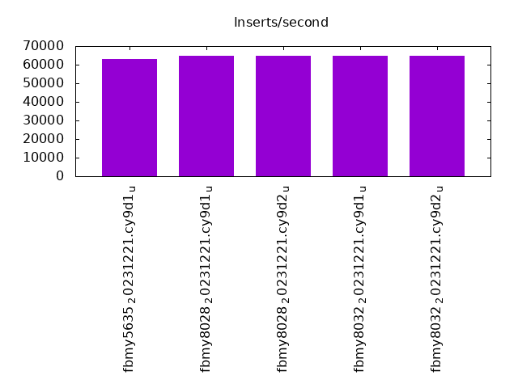
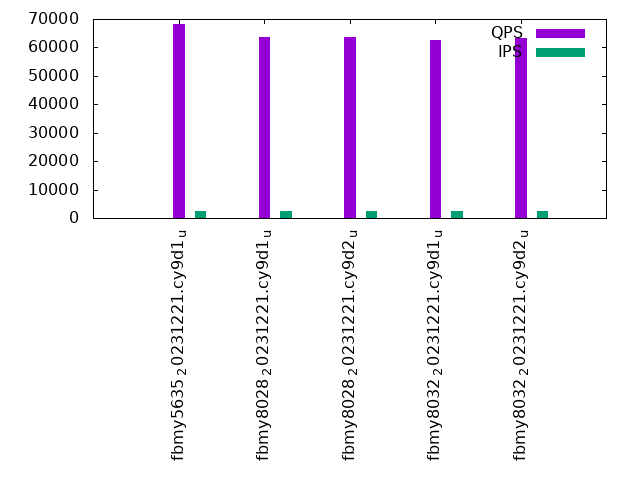

Introduction
This is a report for the insert benchmark with 480M docs and 24 client(s). It is generated by scripts (bash, awk, sed) and Tufte might not be impressed. An overview of the insert benchmark is here and a short update is here. Below, by DBMS, I mean DBMS+version.config. An example is my8020.c10b40 where my means MySQL, 8020 is version 8.0.20 and c10b40 is the name for the configuration file.
The test server has 40 cores, 80 HW threads (hyperthreads enabled), 256G RAM and many TB of fast NVMe SSD with XFS and SW RAID 0. The benchmark was run with 24 clients and there were 1 or 3 connections per client (1 for queries or inserts without rate limits, 1+1 for rate limited inserts+deletes). It uses 1 table per client. It loads 20M rows per table without secondary indexes, creates 3 secondary indexes per table, then inserts 50m+50m rows per table with a delete per insert to avoid growing the table. It then does 6 read+write tests for 3600s each that do queries as fast as possible with 100,100,500,500,1000,1000 inserts/s and the same for deletes/s per client concurrent with the queries. The database is cached in memory. Clients and the DBMS share one server. The per-database configs are in the per-database subdirectories here.
The tested DBMS are:
- fbmy5635_20231221.cy9d1_u - MyRocks 5.6.35 compiled with clang on Dec 21, 2023 at git hash 4f3a57a1, RocksDB 8.7.0 at git hash 29005f0b, cy9d1_u config
- fbmy8028_20231221.cy9d1_u - MyRocks 8.0.28 compiled with clang on Dec 22, 2023 at git hash 2ad105fc, RocksDB 8.7.0 at git hash 29005f0b, cy9d1_u config
- fbmy8028_20231221.cy9d2_u - MyRocks 8.0.28 compiled with clang on Dec 22, 2023 at git hash 2ad105fc, RocksDB 8.7.0 at git hash 29005f0b, cy9d2_u config that disables perf schema
- fbmy8032_20231221.cy9d1_u - MyRocks 8.0.32 compiled with clang on Dec 22, 2023 at git hash 76707b44, RocksDB 8.7.0 at git hash 29005f0b, cy9d1_u config
- fbmy8032_20231221.cy9d2_u - MyRocks 8.0.32 compiled with clang on Dec 22, 2023 at git hash 76707b44, RocksDB 8.7.0 at git hash 29005f0b, cy9d2_u config that disables perf schema
Contents
- Summary
- l.i0: load without secondary indexes
- l.x: create secondary indexes
- l.i1: continue load after secondary indexes created with 50 inserts per transaction
- l.i2: continue load after secondary indexes created with 5 inserts per transaction
- qr100.L1: range queries with 100 insert/s per client
- qp100.L2: point queries with 100 insert/s per client
- qr500.L3: range queries with 500 insert/s per client
- qp500.L4: point queries with 500 insert/s per client
- qr1000.L5: range queries with 1000 insert/s per client
- qp1000.L6: point queries with 1000 insert/s per client
Summary
The numbers are inserts/s for l.i0, l.i1 and l.i2, indexed docs (or rows) /s for l.x and queries/s for qr100, qp100 thru qr1000, qp1000" The values are the average rate over the entire test for inserts (IPS) and queries (QPS). The range of values for IPS and QPS is split into 3 parts: bottom 25%, middle 50%, top 25%. Values in the bottom 25% have a red background, values in the top 25% have a green background and values in the middle have no color. A gray background is used for values that can be ignored because the DBMS did not sustain the target insert rate. Red backgrounds are not used when the minimum value is within 80% of the max value.
| dbms | l.i0 | l.x | l.i1 | l.i2 | qr100 | qp100 | qr500 | qp500 | qr1000 | qp1000 |
|---|---|---|---|---|---|---|---|---|---|---|
| fbmy5635_20231221.cy9d1_u | 625815 | 1578948 | 62926 | 40977 | 48188 | 68068 | 46730 | 59314 | 38913 | 53759 |
| fbmy8028_20231221.cy9d1_u | 618557 | 1563518 | 64612 | 40228 | 48684 | 63575 | 43723 | 56833 | 36931 | 52167 |
| fbmy8028_20231221.cy9d2_u | 618557 | 1605352 | 64795 | 40356 | 47982 | 63677 | 44337 | 57493 | 37380 | 54293 |
| fbmy8032_20231221.cy9d1_u | 612245 | 1584159 | 64703 | 39610 | 48907 | 62490 | 44306 | 57025 | 37938 | 53114 |
| fbmy8032_20231221.cy9d2_u | 613811 | 1589404 | 64790 | 39821 | 51105 | 63323 | 46543 | 57703 | 39496 | 52950 |
This table has relative throughput, throughput for the DBMS relative to the DBMS in the first line, using the absolute throughput from the previous table. Values less than 0.95 have a yellow background. Values greater than 1.05 have a blue background.
| dbms | l.i0 | l.x | l.i1 | l.i2 | qr100 | qp100 | qr500 | qp500 | qr1000 | qp1000 |
|---|---|---|---|---|---|---|---|---|---|---|
| fbmy5635_20231221.cy9d1_u | 1.00 | 1.00 | 1.00 | 1.00 | 1.00 | 1.00 | 1.00 | 1.00 | 1.00 | 1.00 |
| fbmy8028_20231221.cy9d1_u | 0.99 | 0.99 | 1.03 | 0.98 | 1.01 | 0.93 | 0.94 | 0.96 | 0.95 | 0.97 |
| fbmy8028_20231221.cy9d2_u | 0.99 | 1.02 | 1.03 | 0.98 | 1.00 | 0.94 | 0.95 | 0.97 | 0.96 | 1.01 |
| fbmy8032_20231221.cy9d1_u | 0.98 | 1.00 | 1.03 | 0.97 | 1.01 | 0.92 | 0.95 | 0.96 | 0.97 | 0.99 |
| fbmy8032_20231221.cy9d2_u | 0.98 | 1.01 | 1.03 | 0.97 | 1.06 | 0.93 | 1.00 | 0.97 | 1.01 | 0.98 |
This lists the average rate of inserts/s for the tests that do inserts concurrent with queries. For such tests the query rate is listed in the table above. The read+write tests are setup so that the insert rate should match the target rate every second. Cells that are not at least 95% of the target have a red background to indicate a failure to satisfy the target.
| dbms | qr100.L1 | qp100.L2 | qr500.L3 | qp500.L4 | qr1000.L5 | qp1000.L6 |
|---|---|---|---|---|---|---|
| fbmy5635_20231221.cy9d1_u | 2381 | 2381 | 11907 | 11907 | 23828 | 23828 |
| fbmy8028_20231221.cy9d1_u | 2382 | 2382 | 11907 | 11907 | 23828 | 23828 |
| fbmy8028_20231221.cy9d2_u | 2382 | 2382 | 11907 | 11907 | 23828 | 23828 |
| fbmy8032_20231221.cy9d1_u | 2381 | 2381 | 11907 | 11907 | 23828 | 23828 |
| fbmy8032_20231221.cy9d2_u | 2382 | 2382 | 11911 | 11907 | 23828 | 23828 |
| target | 2400 | 2400 | 12000 | 12000 | 24000 | 24000 |
l.i0
l.i0: load without secondary indexes. Graphs for performance per 1-second interval are here.
Average throughput:
Insert response time histogram: each cell has the percentage of responses that take <= the time in the header and max is the max response time in seconds. For the max column values in the top 25% of the range have a red background and in the bottom 25% of the range have a green background. The red background is not used when the min value is within 80% of the max value.
| dbms | 256us | 1ms | 4ms | 16ms | 64ms | 256ms | 1s | 4s | 16s | gt | max |
|---|---|---|---|---|---|---|---|---|---|---|---|
| fbmy5635_20231221.cy9d1_u | 0.112 | 76.511 | 23.335 | nonzero | 0.042 | 0.098 | |||||
| fbmy8028_20231221.cy9d1_u | 71.961 | 27.995 | 0.001 | 0.043 | 0.101 | ||||||
| fbmy8028_20231221.cy9d2_u | 72.871 | 27.085 | 0.001 | 0.043 | 0.107 | ||||||
| fbmy8032_20231221.cy9d1_u | 70.352 | 29.603 | 0.003 | 0.043 | 0.103 | ||||||
| fbmy8032_20231221.cy9d2_u | 71.670 | 28.286 | 0.001 | 0.043 | 0.103 |
Performance metrics for the DBMS listed above. Some are normalized by throughput, others are not. Legend for results is here.
ips qps rps rmbps wps wmbps rpq rkbpq wpi wkbpi csps cpups cspq cpupq dbgb1 dbgb2 rss maxop p50 p99 tag 625815 0 0 0.0 2061.8 247.3 0.000 0.000 0.003 0.405 316415 38.2 0.506 49 14.0 15.1 4.0 0.098 26973 21379 fbmy5635_20231221.cy9d1_u 618557 0 0 0.0 2141.2 149.1 0.000 0.000 0.003 0.247 227541 41.0 0.368 53 13.9 15.3 4.3 0.101 26174 20579 fbmy8028_20231221.cy9d1_u 618557 0 0 0.0 2172.5 150.5 0.000 0.000 0.004 0.249 227815 40.9 0.368 53 13.8 15.2 4.1 0.107 26571 21978 fbmy8028_20231221.cy9d2_u 612245 0 0 0.0 2154.8 149.4 0.000 0.000 0.004 0.250 205560 41.4 0.336 54 13.8 15.2 4.4 0.103 26274 16883 fbmy8032_20231221.cy9d1_u 613811 0 0 0.0 2148.5 151.6 0.000 0.000 0.004 0.253 218594 40.9 0.356 53 13.9 15.3 4.2 0.103 26374 21579 fbmy8032_20231221.cy9d2_u
l.x
l.x: create secondary indexes.
Average throughput:
Performance metrics for the DBMS listed above. Some are normalized by throughput, others are not. Legend for results is here.
ips qps rps rmbps wps wmbps rpq rkbpq wpi wkbpi csps cpups cspq cpupq dbgb1 dbgb2 rss maxop p50 p99 tag 1578948 0 33 0.3 2031.9 221.9 0.000 0.000 0.001 0.144 21362 27.6 0.014 14 31.1 32.2 33.4 0.004 NA NA fbmy5635_20231221.cy9d1_u 1563518 0 33 0.3 2054.6 143.5 0.000 0.000 0.001 0.094 22866 27.4 0.015 14 31.1 32.5 33.6 0.003 NA NA fbmy8028_20231221.cy9d1_u 1605352 0 34 0.3 2089.1 146.2 0.000 0.000 0.001 0.093 23076 27.8 0.014 14 31.1 32.5 33.4 0.004 NA NA fbmy8028_20231221.cy9d2_u 1584159 0 33 0.3 2085.9 149.2 0.000 0.000 0.001 0.096 21767 27.0 0.014 14 31.1 32.5 33.7 0.003 NA NA fbmy8032_20231221.cy9d1_u 1589404 0 33 0.3 2084.0 149.6 0.000 0.000 0.001 0.096 22348 27.3 0.014 14 31.1 32.4 33.4 0.018 NA NA fbmy8032_20231221.cy9d2_u
l.i1
l.i1: continue load after secondary indexes created with 50 inserts per transaction. Graphs for performance per 1-second interval are here.
Average throughput:
Insert response time histogram: each cell has the percentage of responses that take <= the time in the header and max is the max response time in seconds. For the max column values in the top 25% of the range have a red background and in the bottom 25% of the range have a green background. The red background is not used when the min value is within 80% of the max value.
| dbms | 256us | 1ms | 4ms | 16ms | 64ms | 256ms | 1s | 4s | 16s | gt | max |
|---|---|---|---|---|---|---|---|---|---|---|---|
| fbmy5635_20231221.cy9d1_u | 0.048 | 15.659 | 84.292 | 0.001 | 0.087 | ||||||
| fbmy8028_20231221.cy9d1_u | 0.042 | 18.774 | 81.183 | 0.001 | 0.190 | ||||||
| fbmy8028_20231221.cy9d2_u | 0.038 | 18.993 | 80.967 | 0.002 | 0.214 | ||||||
| fbmy8032_20231221.cy9d1_u | 0.033 | 18.966 | 81.001 | 0.001 | 0.104 | ||||||
| fbmy8032_20231221.cy9d2_u | 0.032 | 19.129 | 80.835 | 0.003 | nonzero | 0.352 |
Delete response time histogram: each cell has the percentage of responses that take <= the time in the header and max is the max response time in seconds. For the max column values in the top 25% of the range have a red background and in the bottom 25% of the range have a green background. The red background is not used when the min value is within 80% of the max value.
| dbms | 256us | 1ms | 4ms | 16ms | 64ms | 256ms | 1s | 4s | 16s | gt | max |
|---|---|---|---|---|---|---|---|---|---|---|---|
| fbmy5635_20231221.cy9d1_u | 0.049 | 16.869 | 83.081 | 0.001 | 0.173 | ||||||
| fbmy8028_20231221.cy9d1_u | 0.043 | 19.432 | 80.523 | 0.001 | 0.190 | ||||||
| fbmy8028_20231221.cy9d2_u | 0.040 | 19.580 | 80.379 | 0.002 | 0.214 | ||||||
| fbmy8032_20231221.cy9d1_u | 0.034 | 19.133 | 80.832 | 0.001 | 0.144 | ||||||
| fbmy8032_20231221.cy9d2_u | 0.034 | 19.452 | 80.510 | 0.003 | nonzero | 0.352 |
Performance metrics for the DBMS listed above. Some are normalized by throughput, others are not. Legend for results is here.
ips qps rps rmbps wps wmbps rpq rkbpq wpi wkbpi csps cpups cspq cpupq dbgb1 dbgb2 rss maxop p50 p99 tag 62926 0 44 1.4 1716.8 204.9 0.001 0.022 0.027 3.334 118283 16.6 1.880 211 36.0 37.5 177.8 0.087 2647 2348 fbmy5635_20231221.cy9d1_u 64612 0 38 1.3 1810.2 119.1 0.001 0.021 0.028 1.887 130790 19.2 2.024 238 39.1 40.6 177.9 0.190 2697 2447 fbmy8028_20231221.cy9d1_u 64795 0 34 1.3 1807.2 119.1 0.001 0.021 0.028 1.883 132319 19.1 2.042 236 37.9 39.5 177.9 0.214 2697 2447 fbmy8028_20231221.cy9d2_u 64703 0 36 1.3 1807.8 119.6 0.001 0.021 0.028 1.892 127173 19.3 1.965 239 35.9 37.5 177.8 0.104 2697 2447 fbmy8032_20231221.cy9d1_u 64790 0 35 1.3 1820.6 120.0 0.001 0.021 0.028 1.897 128885 19.1 1.989 236 35.8 37.4 177.7 0.352 2697 2447 fbmy8032_20231221.cy9d2_u
l.i2
l.i2: continue load after secondary indexes created with 5 inserts per transaction. Graphs for performance per 1-second interval are here.
Average throughput:
Insert response time histogram: each cell has the percentage of responses that take <= the time in the header and max is the max response time in seconds. For the max column values in the top 25% of the range have a red background and in the bottom 25% of the range have a green background. The red background is not used when the min value is within 80% of the max value.
| dbms | 256us | 1ms | 4ms | 16ms | 64ms | 256ms | 1s | 4s | 16s | gt | max |
|---|---|---|---|---|---|---|---|---|---|---|---|
| fbmy5635_20231221.cy9d1_u | 0.021 | 0.212 | 99.690 | 0.073 | 0.004 | 0.051 | |||||
| fbmy8028_20231221.cy9d1_u | nonzero | 0.154 | 99.612 | 0.229 | 0.001 | 0.005 | 0.102 | ||||
| fbmy8028_20231221.cy9d2_u | 0.001 | 0.166 | 99.612 | 0.215 | 0.001 | 0.005 | 0.161 | ||||
| fbmy8032_20231221.cy9d1_u | 0.163 | 99.550 | 0.282 | 0.001 | 0.004 | 0.132 | |||||
| fbmy8032_20231221.cy9d2_u | nonzero | 0.134 | 99.657 | 0.204 | 0.001 | 0.004 | 0.166 |
Delete response time histogram: each cell has the percentage of responses that take <= the time in the header and max is the max response time in seconds. For the max column values in the top 25% of the range have a red background and in the bottom 25% of the range have a green background. The red background is not used when the min value is within 80% of the max value.
| dbms | 256us | 1ms | 4ms | 16ms | 64ms | 256ms | 1s | 4s | 16s | gt | max |
|---|---|---|---|---|---|---|---|---|---|---|---|
| fbmy5635_20231221.cy9d1_u | nonzero | 0.175 | 99.629 | 0.191 | 0.004 | nonzero | 0.096 | ||||
| fbmy8028_20231221.cy9d1_u | 0.124 | 99.603 | 0.266 | 0.001 | 0.005 | 0.101 | |||||
| fbmy8028_20231221.cy9d2_u | 0.145 | 99.598 | 0.252 | 0.001 | 0.005 | 0.160 | |||||
| fbmy8032_20231221.cy9d1_u | 0.139 | 99.526 | 0.330 | 0.001 | 0.004 | 0.132 | |||||
| fbmy8032_20231221.cy9d2_u | 0.109 | 99.643 | 0.242 | 0.001 | 0.004 | 0.163 |
Performance metrics for the DBMS listed above. Some are normalized by throughput, others are not. Legend for results is here.
ips qps rps rmbps wps wmbps rpq rkbpq wpi wkbpi csps cpups cspq cpupq dbgb1 dbgb2 rss maxop p50 p99 tag 40977 0 82 0.6 1251.7 146.9 0.002 0.014 0.031 3.672 398912 19.3 9.735 377 38.1 38.2 177.9 0.051 1718 1518 fbmy5635_20231221.cy9d1_u 40228 0 77 0.5 1307.0 81.9 0.002 0.013 0.032 2.085 356591 26.3 8.864 523 35.9 36.2 178.4 0.102 1683 1474 fbmy8028_20231221.cy9d1_u 40356 0 80 0.5 1289.6 80.4 0.002 0.014 0.032 2.040 357169 25.9 8.850 513 36.1 36.4 178.2 0.161 1688 1474 fbmy8028_20231221.cy9d2_u 39610 0 80 0.5 1276.5 79.9 0.002 0.014 0.032 2.067 351702 26.0 8.879 525 38.1 38.4 178.5 0.132 1653 1454 fbmy8032_20231221.cy9d1_u 39821 0 81 0.5 1283.1 80.4 0.002 0.014 0.032 2.067 352665 25.5 8.856 512 35.7 36.0 178.1 0.166 1663 1459 fbmy8032_20231221.cy9d2_u
qr100.L1
qr100.L1: range queries with 100 insert/s per client. Graphs for performance per 1-second interval are here.
Average throughput:
Query response time histogram: each cell has the percentage of responses that take <= the time in the header and max is the max response time in seconds. For max values in the top 25% of the range have a red background and in the bottom 25% of the range have a green background. The red background is not used when the min value is within 80% of the max value.
| dbms | 256us | 1ms | 4ms | 16ms | 64ms | 256ms | 1s | 4s | 16s | gt | max |
|---|---|---|---|---|---|---|---|---|---|---|---|
| fbmy5635_20231221.cy9d1_u | 61.574 | 23.829 | 14.587 | 0.010 | nonzero | nonzero | 0.073 | ||||
| fbmy8028_20231221.cy9d1_u | 44.655 | 42.311 | 13.017 | 0.017 | nonzero | nonzero | 0.093 | ||||
| fbmy8028_20231221.cy9d2_u | 50.052 | 35.698 | 14.230 | 0.020 | nonzero | nonzero | 0.100 | ||||
| fbmy8032_20231221.cy9d1_u | 58.113 | 27.443 | 14.431 | 0.013 | nonzero | nonzero | 0.106 | ||||
| fbmy8032_20231221.cy9d2_u | 61.243 | 25.718 | 13.016 | 0.023 | nonzero | nonzero | 0.170 |
Insert response time histogram: each cell has the percentage of responses that take <= the time in the header and max is the max response time in seconds. For max values in the top 25% of the range have a red background and in the bottom 25% of the range have a green background. The red background is not used when the min value is within 80% of the max value.
| dbms | 256us | 1ms | 4ms | 16ms | 64ms | 256ms | 1s | 4s | 16s | gt | max |
|---|---|---|---|---|---|---|---|---|---|---|---|
| fbmy5635_20231221.cy9d1_u | 99.412 | 0.588 | 0.007 | ||||||||
| fbmy8028_20231221.cy9d1_u | 98.365 | 1.635 | 0.012 | ||||||||
| fbmy8028_20231221.cy9d2_u | 96.838 | 3.162 | 0.011 | ||||||||
| fbmy8032_20231221.cy9d1_u | 99.569 | 0.431 | 0.006 | ||||||||
| fbmy8032_20231221.cy9d2_u | 93.580 | 6.420 | 0.011 |
Delete response time histogram: each cell has the percentage of responses that take <= the time in the header and max is the max response time in seconds. For max values in the top 25% of the range have a red background and in the bottom 25% of the range have a green background. The red background is not used when the min value is within 80% of the max value.
| dbms | 256us | 1ms | 4ms | 16ms | 64ms | 256ms | 1s | 4s | 16s | gt | max |
|---|---|---|---|---|---|---|---|---|---|---|---|
| fbmy5635_20231221.cy9d1_u | 0.001 | 99.611 | 0.388 | 0.007 | |||||||
| fbmy8028_20231221.cy9d1_u | 99.102 | 0.898 | 0.011 | ||||||||
| fbmy8028_20231221.cy9d2_u | 98.198 | 1.802 | 0.012 | ||||||||
| fbmy8032_20231221.cy9d1_u | 99.777 | 0.223 | 0.007 | ||||||||
| fbmy8032_20231221.cy9d2_u | 95.215 | 4.785 | 0.011 |
Performance metrics for the DBMS listed above. Some are normalized by throughput, others are not. Legend for results is here.
ips qps rps rmbps wps wmbps rpq rkbpq wpi wkbpi csps cpups cspq cpupq dbgb1 dbgb2 rss maxop p50 p99 tag 2381 48188 7 0.0 103.5 11.8 0.000 0.001 0.043 5.078 208079 30.5 4.318 506 35.1 37.1 177.7 0.073 1694 1439 fbmy5635_20231221.cy9d1_u 2382 48684 5 0.0 112.4 6.2 0.000 0.001 0.047 2.651 203208 30.9 4.174 508 35.2 37.3 178.2 0.093 1631 1390 fbmy8028_20231221.cy9d1_u 2382 47982 6 0.0 112.6 6.2 0.000 0.001 0.047 2.646 200605 30.6 4.181 510 35.2 37.3 177.9 0.100 2142 1822 fbmy8028_20231221.cy9d2_u 2381 48907 1 0.0 107.6 5.9 0.000 0.000 0.045 2.551 204058 30.9 4.172 505 35.2 37.3 178.2 0.106 2701 1534 fbmy8032_20231221.cy9d1_u 2382 51105 3 0.0 111.2 6.1 0.000 0.001 0.047 2.634 212542 30.6 4.159 479 35.2 37.3 177.8 0.170 1870 1550 fbmy8032_20231221.cy9d2_u
qp100.L2
qp100.L2: point queries with 100 insert/s per client. Graphs for performance per 1-second interval are here.
Average throughput:
Query response time histogram: each cell has the percentage of responses that take <= the time in the header and max is the max response time in seconds. For max values in the top 25% of the range have a red background and in the bottom 25% of the range have a green background. The red background is not used when the min value is within 80% of the max value.
| dbms | 256us | 1ms | 4ms | 16ms | 64ms | 256ms | 1s | 4s | 16s | gt | max |
|---|---|---|---|---|---|---|---|---|---|---|---|
| fbmy5635_20231221.cy9d1_u | 17.506 | 82.479 | 0.015 | nonzero | nonzero | 0.018 | |||||
| fbmy8028_20231221.cy9d1_u | 2.181 | 97.799 | 0.021 | nonzero | nonzero | 0.017 | |||||
| fbmy8028_20231221.cy9d2_u | 4.386 | 95.596 | 0.018 | nonzero | 0.009 | ||||||
| fbmy8032_20231221.cy9d1_u | 0.861 | 99.115 | 0.024 | nonzero | nonzero | 0.023 | |||||
| fbmy8032_20231221.cy9d2_u | 3.367 | 96.613 | 0.019 | nonzero | nonzero | 0.022 |
Insert response time histogram: each cell has the percentage of responses that take <= the time in the header and max is the max response time in seconds. For max values in the top 25% of the range have a red background and in the bottom 25% of the range have a green background. The red background is not used when the min value is within 80% of the max value.
| dbms | 256us | 1ms | 4ms | 16ms | 64ms | 256ms | 1s | 4s | 16s | gt | max |
|---|---|---|---|---|---|---|---|---|---|---|---|
| fbmy5635_20231221.cy9d1_u | 48.623 | 51.241 | 0.137 | 0.020 | |||||||
| fbmy8028_20231221.cy9d1_u | 34.844 | 63.772 | 1.384 | 0.024 | |||||||
| fbmy8028_20231221.cy9d2_u | 42.002 | 57.751 | 0.236 | 0.012 | 0.087 | ||||||
| fbmy8032_20231221.cy9d1_u | 32.733 | 65.513 | 1.755 | 0.025 | |||||||
| fbmy8032_20231221.cy9d2_u | 36.202 | 62.733 | 1.065 | 0.023 |
Delete response time histogram: each cell has the percentage of responses that take <= the time in the header and max is the max response time in seconds. For max values in the top 25% of the range have a red background and in the bottom 25% of the range have a green background. The red background is not used when the min value is within 80% of the max value.
| dbms | 256us | 1ms | 4ms | 16ms | 64ms | 256ms | 1s | 4s | 16s | gt | max |
|---|---|---|---|---|---|---|---|---|---|---|---|
| fbmy5635_20231221.cy9d1_u | 51.713 | 48.172 | 0.115 | 0.064 | |||||||
| fbmy8028_20231221.cy9d1_u | 38.473 | 60.267 | 1.260 | 0.035 | |||||||
| fbmy8028_20231221.cy9d2_u | 45.948 | 53.846 | 0.194 | 0.012 | 0.085 | ||||||
| fbmy8032_20231221.cy9d1_u | 35.987 | 62.385 | 1.628 | 0.043 | |||||||
| fbmy8032_20231221.cy9d2_u | 39.373 | 59.650 | 0.977 | 0.042 |
Performance metrics for the DBMS listed above. Some are normalized by throughput, others are not. Legend for results is here.
ips qps rps rmbps wps wmbps rpq rkbpq wpi wkbpi csps cpups cspq cpupq dbgb1 dbgb2 rss maxop p50 p99 tag 2381 68068 320 1.9 99.4 11.3 0.005 0.028 0.042 4.856 502976 30.2 7.389 355 35.3 37.1 179.6 0.018 2686 2158 fbmy5635_20231221.cy9d1_u 2382 63575 358 2.2 108.3 6.6 0.006 0.035 0.045 2.825 344298 30.7 5.416 386 35.1 37.1 180.1 0.017 2589 2238 fbmy8028_20231221.cy9d1_u 2382 63677 346 2.1 105.7 6.3 0.005 0.034 0.044 2.725 365736 30.1 5.744 378 35.2 37.2 179.6 0.009 2573 2222 fbmy8028_20231221.cy9d2_u 2381 62490 343 2.1 110.3 6.7 0.005 0.034 0.046 2.867 340746 30.8 5.453 394 35.1 37.1 180.0 0.023 2525 2174 fbmy8032_20231221.cy9d1_u 2382 63323 336 2.0 104.2 6.4 0.005 0.033 0.044 2.732 362929 30.1 5.731 380 35.1 37.2 179.6 0.022 2557 2142 fbmy8032_20231221.cy9d2_u
qr500.L3
qr500.L3: range queries with 500 insert/s per client. Graphs for performance per 1-second interval are here.
Average throughput:
Query response time histogram: each cell has the percentage of responses that take <= the time in the header and max is the max response time in seconds. For max values in the top 25% of the range have a red background and in the bottom 25% of the range have a green background. The red background is not used when the min value is within 80% of the max value.
| dbms | 256us | 1ms | 4ms | 16ms | 64ms | 256ms | 1s | 4s | 16s | gt | max |
|---|---|---|---|---|---|---|---|---|---|---|---|
| fbmy5635_20231221.cy9d1_u | 52.781 | 31.958 | 15.214 | 0.046 | nonzero | nonzero | 0.120 | ||||
| fbmy8028_20231221.cy9d1_u | 29.782 | 54.703 | 15.449 | 0.066 | nonzero | nonzero | 0.120 | ||||
| fbmy8028_20231221.cy9d2_u | 35.468 | 49.224 | 15.259 | 0.049 | nonzero | nonzero | 0.082 | ||||
| fbmy8032_20231221.cy9d1_u | 45.532 | 38.174 | 16.217 | 0.076 | nonzero | nonzero | 0.080 | ||||
| fbmy8032_20231221.cy9d2_u | 51.196 | 33.673 | 15.100 | 0.031 | nonzero | nonzero | 0.093 |
Insert response time histogram: each cell has the percentage of responses that take <= the time in the header and max is the max response time in seconds. For max values in the top 25% of the range have a red background and in the bottom 25% of the range have a green background. The red background is not used when the min value is within 80% of the max value.
| dbms | 256us | 1ms | 4ms | 16ms | 64ms | 256ms | 1s | 4s | 16s | gt | max |
|---|---|---|---|---|---|---|---|---|---|---|---|
| fbmy5635_20231221.cy9d1_u | 4.884 | 28.728 | 66.388 | 0.045 | |||||||
| fbmy8028_20231221.cy9d1_u | 5.623 | 38.966 | 55.411 | 0.047 | |||||||
| fbmy8028_20231221.cy9d2_u | 4.247 | 40.260 | 55.492 | 0.047 | |||||||
| fbmy8032_20231221.cy9d1_u | 4.794 | 38.622 | 56.584 | 0.061 | |||||||
| fbmy8032_20231221.cy9d2_u | 5.244 | 37.587 | 57.169 | 0.044 |
Delete response time histogram: each cell has the percentage of responses that take <= the time in the header and max is the max response time in seconds. For max values in the top 25% of the range have a red background and in the bottom 25% of the range have a green background. The red background is not used when the min value is within 80% of the max value.
| dbms | 256us | 1ms | 4ms | 16ms | 64ms | 256ms | 1s | 4s | 16s | gt | max |
|---|---|---|---|---|---|---|---|---|---|---|---|
| fbmy5635_20231221.cy9d1_u | 5.330 | 30.064 | 64.606 | nonzero | 0.070 | ||||||
| fbmy8028_20231221.cy9d1_u | 6.467 | 38.625 | 54.908 | 0.050 | |||||||
| fbmy8028_20231221.cy9d2_u | 5.017 | 39.954 | 55.029 | nonzero | 0.067 | ||||||
| fbmy8032_20231221.cy9d1_u | 5.574 | 38.268 | 56.158 | 0.059 | |||||||
| fbmy8032_20231221.cy9d2_u | 6.025 | 37.268 | 56.707 | nonzero | 0.088 |
Performance metrics for the DBMS listed above. Some are normalized by throughput, others are not. Legend for results is here.
ips qps rps rmbps wps wmbps rpq rkbpq wpi wkbpi csps cpups cspq cpupq dbgb1 dbgb2 rss maxop p50 p99 tag 11907 46730 0 0.0 348.7 40.7 0.000 0.000 0.029 3.500 221630 32.7 4.743 560 35.5 36.8 181.2 0.120 1806 1263 fbmy5635_20231221.cy9d1_u 11907 43723 0 0.0 356.5 21.8 0.000 0.000 0.030 1.877 197616 33.3 4.520 609 35.4 36.9 181.6 0.120 2158 1343 fbmy8028_20231221.cy9d1_u 11907 44337 0 0.0 360.4 22.1 0.000 0.000 0.030 1.903 199987 32.9 4.511 594 35.5 37.0 181.2 0.082 1758 1215 fbmy8028_20231221.cy9d2_u 11907 44306 0 0.0 362.9 22.5 0.000 0.000 0.030 1.935 199704 33.4 4.507 603 35.6 37.1 181.6 0.080 1630 1119 fbmy8032_20231221.cy9d1_u 11911 46543 0 0.0 363.9 22.4 0.000 0.000 0.031 1.922 209164 33.0 4.494 567 35.4 36.9 181.2 0.093 1902 1151 fbmy8032_20231221.cy9d2_u
qp500.L4
qp500.L4: point queries with 500 insert/s per client. Graphs for performance per 1-second interval are here.
Average throughput:
Query response time histogram: each cell has the percentage of responses that take <= the time in the header and max is the max response time in seconds. For max values in the top 25% of the range have a red background and in the bottom 25% of the range have a green background. The red background is not used when the min value is within 80% of the max value.
| dbms | 256us | 1ms | 4ms | 16ms | 64ms | 256ms | 1s | 4s | 16s | gt | max |
|---|---|---|---|---|---|---|---|---|---|---|---|
| fbmy5635_20231221.cy9d1_u | 6.270 | 93.676 | 0.054 | nonzero | nonzero | 0.001 | 0.084 | ||||
| fbmy8028_20231221.cy9d1_u | 0.095 | 99.878 | 0.026 | nonzero | nonzero | 0.001 | 0.082 | ||||
| fbmy8028_20231221.cy9d2_u | 0.899 | 98.971 | 0.129 | nonzero | nonzero | 0.001 | 0.083 | ||||
| fbmy8032_20231221.cy9d1_u | 0.120 | 99.799 | 0.080 | nonzero | nonzero | 0.001 | 0.085 | ||||
| fbmy8032_20231221.cy9d2_u | 0.424 | 99.535 | 0.040 | nonzero | nonzero | 0.001 | 0.083 |
Insert response time histogram: each cell has the percentage of responses that take <= the time in the header and max is the max response time in seconds. For max values in the top 25% of the range have a red background and in the bottom 25% of the range have a green background. The red background is not used when the min value is within 80% of the max value.
| dbms | 256us | 1ms | 4ms | 16ms | 64ms | 256ms | 1s | 4s | 16s | gt | max |
|---|---|---|---|---|---|---|---|---|---|---|---|
| fbmy5635_20231221.cy9d1_u | 35.847 | 63.804 | 0.347 | 0.001 | 0.091 | ||||||
| fbmy8028_20231221.cy9d1_u | 19.523 | 75.287 | 5.190 | nonzero | 0.080 | ||||||
| fbmy8028_20231221.cy9d2_u | 7.327 | 54.768 | 37.899 | 0.005 | 0.099 | ||||||
| fbmy8032_20231221.cy9d1_u | 5.464 | 76.124 | 18.411 | 0.001 | 0.093 | ||||||
| fbmy8032_20231221.cy9d2_u | 27.329 | 71.192 | 1.478 | 0.001 | 0.087 |
Delete response time histogram: each cell has the percentage of responses that take <= the time in the header and max is the max response time in seconds. For max values in the top 25% of the range have a red background and in the bottom 25% of the range have a green background. The red background is not used when the min value is within 80% of the max value.
| dbms | 256us | 1ms | 4ms | 16ms | 64ms | 256ms | 1s | 4s | 16s | gt | max |
|---|---|---|---|---|---|---|---|---|---|---|---|
| fbmy5635_20231221.cy9d1_u | 37.799 | 61.899 | 0.301 | 0.001 | 0.083 | ||||||
| fbmy8028_20231221.cy9d1_u | 21.637 | 73.315 | 5.047 | 0.002 | 0.103 | ||||||
| fbmy8028_20231221.cy9d2_u | 8.896 | 53.658 | 37.440 | 0.006 | 0.099 | ||||||
| fbmy8032_20231221.cy9d1_u | 6.572 | 75.253 | 18.174 | 0.002 | 0.092 | ||||||
| fbmy8032_20231221.cy9d2_u | 28.923 | 69.619 | 1.456 | 0.002 | 0.087 |
Performance metrics for the DBMS listed above. Some are normalized by throughput, others are not. Legend for results is here.
ips qps rps rmbps wps wmbps rpq rkbpq wpi wkbpi csps cpups cspq cpupq dbgb1 dbgb2 rss maxop p50 p99 tag 11907 59314 0 0.0 358.3 41.9 0.000 0.000 0.030 3.601 582141 32.3 9.815 436 35.6 36.5 183.9 0.084 2414 1343 fbmy5635_20231221.cy9d1_u 11907 56833 0 0.0 362.4 21.5 0.000 0.000 0.030 1.848 375955 32.7 6.615 460 35.8 36.9 183.7 0.082 2318 2014 fbmy8028_20231221.cy9d1_u 11907 57493 0 0.0 361.0 21.5 0.000 0.000 0.030 1.852 391159 32.2 6.804 448 35.4 36.5 183.3 0.083 2334 1471 fbmy8028_20231221.cy9d2_u 11907 57025 0 0.0 369.5 22.3 0.000 0.000 0.031 1.917 361267 32.8 6.335 460 35.5 36.6 183.9 0.085 2365 1455 fbmy8032_20231221.cy9d1_u 11907 57703 0 0.0 374.7 22.5 0.000 0.000 0.031 1.932 384383 32.1 6.661 445 35.3 36.4 183.7 0.083 2382 1966 fbmy8032_20231221.cy9d2_u
qr1000.L5
qr1000.L5: range queries with 1000 insert/s per client. Graphs for performance per 1-second interval are here.
Average throughput:

Query response time histogram: each cell has the percentage of responses that take <= the time in the header and max is the max response time in seconds. For max values in the top 25% of the range have a red background and in the bottom 25% of the range have a green background. The red background is not used when the min value is within 80% of the max value.
| dbms | 256us | 1ms | 4ms | 16ms | 64ms | 256ms | 1s | 4s | 16s | gt | max |
|---|---|---|---|---|---|---|---|---|---|---|---|
| fbmy5635_20231221.cy9d1_u | 40.855 | 39.350 | 19.575 | 0.219 | nonzero | nonzero | 0.207 | ||||
| fbmy8028_20231221.cy9d1_u | 18.461 | 61.433 | 19.856 | 0.249 | nonzero | nonzero | 0.102 | ||||
| fbmy8028_20231221.cy9d2_u | 24.040 | 55.738 | 19.976 | 0.245 | nonzero | nonzero | 0.093 | ||||
| fbmy8032_20231221.cy9d1_u | 34.983 | 44.694 | 20.069 | 0.254 | nonzero | nonzero | 0.127 | ||||
| fbmy8032_20231221.cy9d2_u | 39.730 | 40.928 | 19.133 | 0.209 | nonzero | nonzero | 0.115 |
Insert response time histogram: each cell has the percentage of responses that take <= the time in the header and max is the max response time in seconds. For max values in the top 25% of the range have a red background and in the bottom 25% of the range have a green background. The red background is not used when the min value is within 80% of the max value.
| dbms | 256us | 1ms | 4ms | 16ms | 64ms | 256ms | 1s | 4s | 16s | gt | max |
|---|---|---|---|---|---|---|---|---|---|---|---|
| fbmy5635_20231221.cy9d1_u | 0.991 | 14.133 | 84.876 | 0.062 | |||||||
| fbmy8028_20231221.cy9d1_u | 2.021 | 26.973 | 71.005 | 0.059 | |||||||
| fbmy8028_20231221.cy9d2_u | 2.150 | 16.445 | 81.404 | 0.001 | 0.095 | ||||||
| fbmy8032_20231221.cy9d1_u | 0.841 | 15.966 | 83.193 | 0.053 | |||||||
| fbmy8032_20231221.cy9d2_u | 0.773 | 15.959 | 83.268 | 0.059 |
Delete response time histogram: each cell has the percentage of responses that take <= the time in the header and max is the max response time in seconds. For max values in the top 25% of the range have a red background and in the bottom 25% of the range have a green background. The red background is not used when the min value is within 80% of the max value.
| dbms | 256us | 1ms | 4ms | 16ms | 64ms | 256ms | 1s | 4s | 16s | gt | max |
|---|---|---|---|---|---|---|---|---|---|---|---|
| fbmy5635_20231221.cy9d1_u | 1.084 | 14.985 | 83.931 | nonzero | 0.072 | ||||||
| fbmy8028_20231221.cy9d1_u | 2.255 | 26.865 | 70.880 | nonzero | 0.071 | ||||||
| fbmy8028_20231221.cy9d2_u | 2.331 | 16.378 | 81.290 | 0.001 | 0.095 | ||||||
| fbmy8032_20231221.cy9d1_u | 0.961 | 15.911 | 83.127 | 0.057 | |||||||
| fbmy8032_20231221.cy9d2_u | 0.913 | 15.906 | 83.181 | nonzero | 0.069 |
Performance metrics for the DBMS listed above. Some are normalized by throughput, others are not. Legend for results is here.
ips qps rps rmbps wps wmbps rpq rkbpq wpi wkbpi csps cpups cspq cpupq dbgb1 dbgb2 rss maxop p50 p99 tag 23828 38913 7 0.0 643.3 75.6 0.000 0.001 0.027 3.249 213127 36.1 5.477 742 36.1 38.1 184.9 0.207 1438 1023 fbmy5635_20231221.cy9d1_u 23828 36931 0 0.0 679.5 41.5 0.000 0.000 0.029 1.783 189826 37.0 5.140 801 36.1 38.2 185.0 0.102 1646 1071 fbmy8028_20231221.cy9d1_u 23828 37380 0 0.0 672.0 40.9 0.000 0.000 0.028 1.759 193927 36.9 5.188 790 36.0 38.2 184.6 0.093 1390 1007 fbmy8028_20231221.cy9d2_u 23828 37938 0 0.0 669.4 40.6 0.000 0.000 0.028 1.744 194210 37.1 5.119 782 36.2 38.3 185.1 0.127 1518 1023 fbmy8032_20231221.cy9d1_u 23828 39496 0 0.0 682.7 41.7 0.000 0.000 0.029 1.792 200330 36.9 5.072 747 36.2 38.4 185.1 0.115 1455 1055 fbmy8032_20231221.cy9d2_u
qp1000.L6
qp1000.L6: point queries with 1000 insert/s per client. Graphs for performance per 1-second interval are here.
Average throughput:
Query response time histogram: each cell has the percentage of responses that take <= the time in the header and max is the max response time in seconds. For max values in the top 25% of the range have a red background and in the bottom 25% of the range have a green background. The red background is not used when the min value is within 80% of the max value.
| dbms | 256us | 1ms | 4ms | 16ms | 64ms | 256ms | 1s | 4s | 16s | gt | max |
|---|---|---|---|---|---|---|---|---|---|---|---|
| fbmy5635_20231221.cy9d1_u | 1.642 | 97.959 | 0.399 | nonzero | nonzero | 0.021 | |||||
| fbmy8028_20231221.cy9d1_u | 0.024 | 99.262 | 0.714 | nonzero | nonzero | 0.025 | |||||
| fbmy8028_20231221.cy9d2_u | 0.088 | 99.281 | 0.631 | nonzero | nonzero | 0.022 | |||||
| fbmy8032_20231221.cy9d1_u | 0.002 | 99.423 | 0.576 | nonzero | 0.012 | ||||||
| fbmy8032_20231221.cy9d2_u | 0.027 | 99.223 | 0.750 | nonzero | 0.012 |
Insert response time histogram: each cell has the percentage of responses that take <= the time in the header and max is the max response time in seconds. For max values in the top 25% of the range have a red background and in the bottom 25% of the range have a green background. The red background is not used when the min value is within 80% of the max value.
| dbms | 256us | 1ms | 4ms | 16ms | 64ms | 256ms | 1s | 4s | 16s | gt | max |
|---|---|---|---|---|---|---|---|---|---|---|---|
| fbmy5635_20231221.cy9d1_u | 1.534 | 10.710 | 87.756 | nonzero | 0.065 | ||||||
| fbmy8028_20231221.cy9d1_u | 1.288 | 14.195 | 84.516 | nonzero | 0.066 | ||||||
| fbmy8028_20231221.cy9d2_u | 1.544 | 11.547 | 86.909 | 0.060 | |||||||
| fbmy8032_20231221.cy9d1_u | 2.426 | 11.253 | 86.321 | nonzero | 0.068 | ||||||
| fbmy8032_20231221.cy9d2_u | 1.005 | 10.352 | 88.642 | 0.001 | 0.079 |
Delete response time histogram: each cell has the percentage of responses that take <= the time in the header and max is the max response time in seconds. For max values in the top 25% of the range have a red background and in the bottom 25% of the range have a green background. The red background is not used when the min value is within 80% of the max value.
| dbms | 256us | 1ms | 4ms | 16ms | 64ms | 256ms | 1s | 4s | 16s | gt | max |
|---|---|---|---|---|---|---|---|---|---|---|---|
| fbmy5635_20231221.cy9d1_u | 1.586 | 11.805 | 86.607 | 0.002 | 0.126 | ||||||
| fbmy8028_20231221.cy9d1_u | 1.515 | 14.165 | 84.319 | 0.001 | 0.101 | ||||||
| fbmy8028_20231221.cy9d2_u | 1.759 | 11.521 | 86.719 | 0.001 | 0.101 | ||||||
| fbmy8032_20231221.cy9d1_u | 2.639 | 11.197 | 86.163 | 0.001 | 0.092 | ||||||
| fbmy8032_20231221.cy9d2_u | 1.188 | 10.335 | 88.474 | 0.002 | 0.098 |
Performance metrics for the DBMS listed above. Some are normalized by throughput, others are not. Legend for results is here.
ips qps rps rmbps wps wmbps rpq rkbpq wpi wkbpi csps cpups cspq cpupq dbgb1 dbgb2 rss maxop p50 p99 tag 23828 53759 9 0.1 639.7 75.3 0.000 0.001 0.027 3.235 598815 36.9 11.139 549 35.8 36.9 185.7 0.021 2206 1678 fbmy5635_20231221.cy9d1_u 23828 52167 6 0.1 680.8 40.1 0.000 0.001 0.029 1.721 386219 36.3 7.403 557 36.6 37.9 186.0 0.025 2174 1790 fbmy8028_20231221.cy9d1_u 23828 54293 0 0.0 673.1 39.5 0.000 0.000 0.028 1.699 386047 35.8 7.110 528 36.8 38.1 185.3 0.022 2238 1902 fbmy8028_20231221.cy9d2_u 23828 53114 8 0.1 686.2 40.8 0.000 0.001 0.029 1.752 366597 36.5 6.902 550 36.9 38.2 186.2 0.012 2221 1934 fbmy8032_20231221.cy9d1_u 23828 52950 15 0.1 687.0 40.6 0.000 0.002 0.029 1.747 393214 35.9 7.426 542 36.6 37.8 185.8 0.012 2190 1886 fbmy8032_20231221.cy9d2_u
l.i0
l.i0: load without secondary indexes
Performance metrics for all DBMS, not just the ones listed above. Some are normalized by throughput, others are not. Legend for results is here.
ips qps rps rmbps wps wmbps rpq rkbpq wpi wkbpi csps cpups cspq cpupq dbgb1 dbgb2 rss maxop p50 p99 tag 625815 0 0 0.0 2061.8 247.3 0.000 0.000 0.003 0.405 316415 38.2 0.506 49 14.0 15.1 4.0 0.098 26973 21379 fbmy5635_20231221.cy9d1_u 618557 0 0 0.0 2141.2 149.1 0.000 0.000 0.003 0.247 227541 41.0 0.368 53 13.9 15.3 4.3 0.101 26174 20579 fbmy8028_20231221.cy9d1_u 618557 0 0 0.0 2172.5 150.5 0.000 0.000 0.004 0.249 227815 40.9 0.368 53 13.8 15.2 4.1 0.107 26571 21978 fbmy8028_20231221.cy9d2_u 612245 0 0 0.0 2154.8 149.4 0.000 0.000 0.004 0.250 205560 41.4 0.336 54 13.8 15.2 4.4 0.103 26274 16883 fbmy8032_20231221.cy9d1_u 613811 0 0 0.0 2148.5 151.6 0.000 0.000 0.004 0.253 218594 40.9 0.356 53 13.9 15.3 4.2 0.103 26374 21579 fbmy8032_20231221.cy9d2_u
l.x
l.x: create secondary indexes
Performance metrics for all DBMS, not just the ones listed above. Some are normalized by throughput, others are not. Legend for results is here.
ips qps rps rmbps wps wmbps rpq rkbpq wpi wkbpi csps cpups cspq cpupq dbgb1 dbgb2 rss maxop p50 p99 tag 1578948 0 33 0.3 2031.9 221.9 0.000 0.000 0.001 0.144 21362 27.6 0.014 14 31.1 32.2 33.4 0.004 NA NA fbmy5635_20231221.cy9d1_u 1563518 0 33 0.3 2054.6 143.5 0.000 0.000 0.001 0.094 22866 27.4 0.015 14 31.1 32.5 33.6 0.003 NA NA fbmy8028_20231221.cy9d1_u 1605352 0 34 0.3 2089.1 146.2 0.000 0.000 0.001 0.093 23076 27.8 0.014 14 31.1 32.5 33.4 0.004 NA NA fbmy8028_20231221.cy9d2_u 1584159 0 33 0.3 2085.9 149.2 0.000 0.000 0.001 0.096 21767 27.0 0.014 14 31.1 32.5 33.7 0.003 NA NA fbmy8032_20231221.cy9d1_u 1589404 0 33 0.3 2084.0 149.6 0.000 0.000 0.001 0.096 22348 27.3 0.014 14 31.1 32.4 33.4 0.018 NA NA fbmy8032_20231221.cy9d2_u
l.i1
l.i1: continue load after secondary indexes created with 50 inserts per transaction
Performance metrics for all DBMS, not just the ones listed above. Some are normalized by throughput, others are not. Legend for results is here.
ips qps rps rmbps wps wmbps rpq rkbpq wpi wkbpi csps cpups cspq cpupq dbgb1 dbgb2 rss maxop p50 p99 tag 62926 0 44 1.4 1716.8 204.9 0.001 0.022 0.027 3.334 118283 16.6 1.880 211 36.0 37.5 177.8 0.087 2647 2348 fbmy5635_20231221.cy9d1_u 64612 0 38 1.3 1810.2 119.1 0.001 0.021 0.028 1.887 130790 19.2 2.024 238 39.1 40.6 177.9 0.190 2697 2447 fbmy8028_20231221.cy9d1_u 64795 0 34 1.3 1807.2 119.1 0.001 0.021 0.028 1.883 132319 19.1 2.042 236 37.9 39.5 177.9 0.214 2697 2447 fbmy8028_20231221.cy9d2_u 64703 0 36 1.3 1807.8 119.6 0.001 0.021 0.028 1.892 127173 19.3 1.965 239 35.9 37.5 177.8 0.104 2697 2447 fbmy8032_20231221.cy9d1_u 64790 0 35 1.3 1820.6 120.0 0.001 0.021 0.028 1.897 128885 19.1 1.989 236 35.8 37.4 177.7 0.352 2697 2447 fbmy8032_20231221.cy9d2_u
l.i2
l.i2: continue load after secondary indexes created with 5 inserts per transaction
Performance metrics for all DBMS, not just the ones listed above. Some are normalized by throughput, others are not. Legend for results is here.
ips qps rps rmbps wps wmbps rpq rkbpq wpi wkbpi csps cpups cspq cpupq dbgb1 dbgb2 rss maxop p50 p99 tag 40977 0 82 0.6 1251.7 146.9 0.002 0.014 0.031 3.672 398912 19.3 9.735 377 38.1 38.2 177.9 0.051 1718 1518 fbmy5635_20231221.cy9d1_u 40228 0 77 0.5 1307.0 81.9 0.002 0.013 0.032 2.085 356591 26.3 8.864 523 35.9 36.2 178.4 0.102 1683 1474 fbmy8028_20231221.cy9d1_u 40356 0 80 0.5 1289.6 80.4 0.002 0.014 0.032 2.040 357169 25.9 8.850 513 36.1 36.4 178.2 0.161 1688 1474 fbmy8028_20231221.cy9d2_u 39610 0 80 0.5 1276.5 79.9 0.002 0.014 0.032 2.067 351702 26.0 8.879 525 38.1 38.4 178.5 0.132 1653 1454 fbmy8032_20231221.cy9d1_u 39821 0 81 0.5 1283.1 80.4 0.002 0.014 0.032 2.067 352665 25.5 8.856 512 35.7 36.0 178.1 0.166 1663 1459 fbmy8032_20231221.cy9d2_u
qr100.L1
qr100.L1: range queries with 100 insert/s per client
Performance metrics for all DBMS, not just the ones listed above. Some are normalized by throughput, others are not. Legend for results is here.
ips qps rps rmbps wps wmbps rpq rkbpq wpi wkbpi csps cpups cspq cpupq dbgb1 dbgb2 rss maxop p50 p99 tag 2381 48188 7 0.0 103.5 11.8 0.000 0.001 0.043 5.078 208079 30.5 4.318 506 35.1 37.1 177.7 0.073 1694 1439 fbmy5635_20231221.cy9d1_u 2382 48684 5 0.0 112.4 6.2 0.000 0.001 0.047 2.651 203208 30.9 4.174 508 35.2 37.3 178.2 0.093 1631 1390 fbmy8028_20231221.cy9d1_u 2382 47982 6 0.0 112.6 6.2 0.000 0.001 0.047 2.646 200605 30.6 4.181 510 35.2 37.3 177.9 0.100 2142 1822 fbmy8028_20231221.cy9d2_u 2381 48907 1 0.0 107.6 5.9 0.000 0.000 0.045 2.551 204058 30.9 4.172 505 35.2 37.3 178.2 0.106 2701 1534 fbmy8032_20231221.cy9d1_u 2382 51105 3 0.0 111.2 6.1 0.000 0.001 0.047 2.634 212542 30.6 4.159 479 35.2 37.3 177.8 0.170 1870 1550 fbmy8032_20231221.cy9d2_u
qp100.L2
qp100.L2: point queries with 100 insert/s per client
Performance metrics for all DBMS, not just the ones listed above. Some are normalized by throughput, others are not. Legend for results is here.
ips qps rps rmbps wps wmbps rpq rkbpq wpi wkbpi csps cpups cspq cpupq dbgb1 dbgb2 rss maxop p50 p99 tag 2381 68068 320 1.9 99.4 11.3 0.005 0.028 0.042 4.856 502976 30.2 7.389 355 35.3 37.1 179.6 0.018 2686 2158 fbmy5635_20231221.cy9d1_u 2382 63575 358 2.2 108.3 6.6 0.006 0.035 0.045 2.825 344298 30.7 5.416 386 35.1 37.1 180.1 0.017 2589 2238 fbmy8028_20231221.cy9d1_u 2382 63677 346 2.1 105.7 6.3 0.005 0.034 0.044 2.725 365736 30.1 5.744 378 35.2 37.2 179.6 0.009 2573 2222 fbmy8028_20231221.cy9d2_u 2381 62490 343 2.1 110.3 6.7 0.005 0.034 0.046 2.867 340746 30.8 5.453 394 35.1 37.1 180.0 0.023 2525 2174 fbmy8032_20231221.cy9d1_u 2382 63323 336 2.0 104.2 6.4 0.005 0.033 0.044 2.732 362929 30.1 5.731 380 35.1 37.2 179.6 0.022 2557 2142 fbmy8032_20231221.cy9d2_u
qr500.L3
qr500.L3: range queries with 500 insert/s per client
Performance metrics for all DBMS, not just the ones listed above. Some are normalized by throughput, others are not. Legend for results is here.
ips qps rps rmbps wps wmbps rpq rkbpq wpi wkbpi csps cpups cspq cpupq dbgb1 dbgb2 rss maxop p50 p99 tag 11907 46730 0 0.0 348.7 40.7 0.000 0.000 0.029 3.500 221630 32.7 4.743 560 35.5 36.8 181.2 0.120 1806 1263 fbmy5635_20231221.cy9d1_u 11907 43723 0 0.0 356.5 21.8 0.000 0.000 0.030 1.877 197616 33.3 4.520 609 35.4 36.9 181.6 0.120 2158 1343 fbmy8028_20231221.cy9d1_u 11907 44337 0 0.0 360.4 22.1 0.000 0.000 0.030 1.903 199987 32.9 4.511 594 35.5 37.0 181.2 0.082 1758 1215 fbmy8028_20231221.cy9d2_u 11907 44306 0 0.0 362.9 22.5 0.000 0.000 0.030 1.935 199704 33.4 4.507 603 35.6 37.1 181.6 0.080 1630 1119 fbmy8032_20231221.cy9d1_u 11911 46543 0 0.0 363.9 22.4 0.000 0.000 0.031 1.922 209164 33.0 4.494 567 35.4 36.9 181.2 0.093 1902 1151 fbmy8032_20231221.cy9d2_u
qp500.L4
qp500.L4: point queries with 500 insert/s per client
Performance metrics for all DBMS, not just the ones listed above. Some are normalized by throughput, others are not. Legend for results is here.
ips qps rps rmbps wps wmbps rpq rkbpq wpi wkbpi csps cpups cspq cpupq dbgb1 dbgb2 rss maxop p50 p99 tag 11907 59314 0 0.0 358.3 41.9 0.000 0.000 0.030 3.601 582141 32.3 9.815 436 35.6 36.5 183.9 0.084 2414 1343 fbmy5635_20231221.cy9d1_u 11907 56833 0 0.0 362.4 21.5 0.000 0.000 0.030 1.848 375955 32.7 6.615 460 35.8 36.9 183.7 0.082 2318 2014 fbmy8028_20231221.cy9d1_u 11907 57493 0 0.0 361.0 21.5 0.000 0.000 0.030 1.852 391159 32.2 6.804 448 35.4 36.5 183.3 0.083 2334 1471 fbmy8028_20231221.cy9d2_u 11907 57025 0 0.0 369.5 22.3 0.000 0.000 0.031 1.917 361267 32.8 6.335 460 35.5 36.6 183.9 0.085 2365 1455 fbmy8032_20231221.cy9d1_u 11907 57703 0 0.0 374.7 22.5 0.000 0.000 0.031 1.932 384383 32.1 6.661 445 35.3 36.4 183.7 0.083 2382 1966 fbmy8032_20231221.cy9d2_u
qr1000.L5
qr1000.L5: range queries with 1000 insert/s per client
Performance metrics for all DBMS, not just the ones listed above. Some are normalized by throughput, others are not. Legend for results is here.
ips qps rps rmbps wps wmbps rpq rkbpq wpi wkbpi csps cpups cspq cpupq dbgb1 dbgb2 rss maxop p50 p99 tag 23828 38913 7 0.0 643.3 75.6 0.000 0.001 0.027 3.249 213127 36.1 5.477 742 36.1 38.1 184.9 0.207 1438 1023 fbmy5635_20231221.cy9d1_u 23828 36931 0 0.0 679.5 41.5 0.000 0.000 0.029 1.783 189826 37.0 5.140 801 36.1 38.2 185.0 0.102 1646 1071 fbmy8028_20231221.cy9d1_u 23828 37380 0 0.0 672.0 40.9 0.000 0.000 0.028 1.759 193927 36.9 5.188 790 36.0 38.2 184.6 0.093 1390 1007 fbmy8028_20231221.cy9d2_u 23828 37938 0 0.0 669.4 40.6 0.000 0.000 0.028 1.744 194210 37.1 5.119 782 36.2 38.3 185.1 0.127 1518 1023 fbmy8032_20231221.cy9d1_u 23828 39496 0 0.0 682.7 41.7 0.000 0.000 0.029 1.792 200330 36.9 5.072 747 36.2 38.4 185.1 0.115 1455 1055 fbmy8032_20231221.cy9d2_u
qp1000.L6
qp1000.L6: point queries with 1000 insert/s per client
Performance metrics for all DBMS, not just the ones listed above. Some are normalized by throughput, others are not. Legend for results is here.
ips qps rps rmbps wps wmbps rpq rkbpq wpi wkbpi csps cpups cspq cpupq dbgb1 dbgb2 rss maxop p50 p99 tag 23828 53759 9 0.1 639.7 75.3 0.000 0.001 0.027 3.235 598815 36.9 11.139 549 35.8 36.9 185.7 0.021 2206 1678 fbmy5635_20231221.cy9d1_u 23828 52167 6 0.1 680.8 40.1 0.000 0.001 0.029 1.721 386219 36.3 7.403 557 36.6 37.9 186.0 0.025 2174 1790 fbmy8028_20231221.cy9d1_u 23828 54293 0 0.0 673.1 39.5 0.000 0.000 0.028 1.699 386047 35.8 7.110 528 36.8 38.1 185.3 0.022 2238 1902 fbmy8028_20231221.cy9d2_u 23828 53114 8 0.1 686.2 40.8 0.000 0.001 0.029 1.752 366597 36.5 6.902 550 36.9 38.2 186.2 0.012 2221 1934 fbmy8032_20231221.cy9d1_u 23828 52950 15 0.1 687.0 40.6 0.000 0.002 0.029 1.747 393214 35.9 7.426 542 36.6 37.8 185.8 0.012 2190 1886 fbmy8032_20231221.cy9d2_u
l.i0
- l.i0: load without secondary indexes
- Legend for results is here.
- Each entry lists the percentage of responses that fit in that bucket (slower than max time for previous bucket, faster than min time for next bucket).
Insert response time histogram
256us 1ms 4ms 16ms 64ms 256ms 1s 4s 16s gt max tag 0.000 0.112 76.511 23.335 nonzero 0.042 0.000 0.000 0.000 0.000 0.098 fbmy5635_20231221.cy9d1_u 0.000 0.000 71.961 27.995 0.001 0.043 0.000 0.000 0.000 0.000 0.101 fbmy8028_20231221.cy9d1_u 0.000 0.000 72.871 27.085 0.001 0.043 0.000 0.000 0.000 0.000 0.107 fbmy8028_20231221.cy9d2_u 0.000 0.000 70.352 29.603 0.003 0.043 0.000 0.000 0.000 0.000 0.103 fbmy8032_20231221.cy9d1_u 0.000 0.000 71.670 28.286 0.001 0.043 0.000 0.000 0.000 0.000 0.103 fbmy8032_20231221.cy9d2_u
l.x
- l.x: create secondary indexes
- Legend for results is here.
- Each entry lists the percentage of responses that fit in that bucket (slower than max time for previous bucket, faster than min time for next bucket).
TODO - determine whether there is data for create index response time
l.i1
- l.i1: continue load after secondary indexes created with 50 inserts per transaction
- Legend for results is here.
- Each entry lists the percentage of responses that fit in that bucket (slower than max time for previous bucket, faster than min time for next bucket).
Insert response time histogram
256us 1ms 4ms 16ms 64ms 256ms 1s 4s 16s gt max tag 0.000 0.000 0.048 15.659 84.292 0.001 0.000 0.000 0.000 0.000 0.087 fbmy5635_20231221.cy9d1_u 0.000 0.000 0.042 18.774 81.183 0.001 0.000 0.000 0.000 0.000 0.190 fbmy8028_20231221.cy9d1_u 0.000 0.000 0.038 18.993 80.967 0.002 0.000 0.000 0.000 0.000 0.214 fbmy8028_20231221.cy9d2_u 0.000 0.000 0.033 18.966 81.001 0.001 0.000 0.000 0.000 0.000 0.104 fbmy8032_20231221.cy9d1_u 0.000 0.000 0.032 19.129 80.835 0.003 nonzero 0.000 0.000 0.000 0.352 fbmy8032_20231221.cy9d2_u
Delete response time histogram
256us 1ms 4ms 16ms 64ms 256ms 1s 4s 16s gt max tag 0.000 0.000 0.049 16.869 83.081 0.001 0.000 0.000 0.000 0.000 0.173 fbmy5635_20231221.cy9d1_u 0.000 0.000 0.043 19.432 80.523 0.001 0.000 0.000 0.000 0.000 0.190 fbmy8028_20231221.cy9d1_u 0.000 0.000 0.040 19.580 80.379 0.002 0.000 0.000 0.000 0.000 0.214 fbmy8028_20231221.cy9d2_u 0.000 0.000 0.034 19.133 80.832 0.001 0.000 0.000 0.000 0.000 0.144 fbmy8032_20231221.cy9d1_u 0.000 0.000 0.034 19.452 80.510 0.003 nonzero 0.000 0.000 0.000 0.352 fbmy8032_20231221.cy9d2_u
l.i2
- l.i2: continue load after secondary indexes created with 5 inserts per transaction
- Legend for results is here.
- Each entry lists the percentage of responses that fit in that bucket (slower than max time for previous bucket, faster than min time for next bucket).
Insert response time histogram
256us 1ms 4ms 16ms 64ms 256ms 1s 4s 16s gt max tag 0.021 0.212 99.690 0.073 0.004 0.000 0.000 0.000 0.000 0.000 0.051 fbmy5635_20231221.cy9d1_u nonzero 0.154 99.612 0.229 0.001 0.005 0.000 0.000 0.000 0.000 0.102 fbmy8028_20231221.cy9d1_u 0.001 0.166 99.612 0.215 0.001 0.005 0.000 0.000 0.000 0.000 0.161 fbmy8028_20231221.cy9d2_u 0.000 0.163 99.550 0.282 0.001 0.004 0.000 0.000 0.000 0.000 0.132 fbmy8032_20231221.cy9d1_u nonzero 0.134 99.657 0.204 0.001 0.004 0.000 0.000 0.000 0.000 0.166 fbmy8032_20231221.cy9d2_u
Delete response time histogram
256us 1ms 4ms 16ms 64ms 256ms 1s 4s 16s gt max tag nonzero 0.175 99.629 0.191 0.004 nonzero 0.000 0.000 0.000 0.000 0.096 fbmy5635_20231221.cy9d1_u 0.000 0.124 99.603 0.266 0.001 0.005 0.000 0.000 0.000 0.000 0.101 fbmy8028_20231221.cy9d1_u 0.000 0.145 99.598 0.252 0.001 0.005 0.000 0.000 0.000 0.000 0.160 fbmy8028_20231221.cy9d2_u 0.000 0.139 99.526 0.330 0.001 0.004 0.000 0.000 0.000 0.000 0.132 fbmy8032_20231221.cy9d1_u 0.000 0.109 99.643 0.242 0.001 0.004 0.000 0.000 0.000 0.000 0.163 fbmy8032_20231221.cy9d2_u
qr100.L1
- qr100.L1: range queries with 100 insert/s per client
- Legend for results is here.
- Each entry lists the percentage of responses that fit in that bucket (slower than max time for previous bucket, faster than min time for next bucket).
Query response time histogram
256us 1ms 4ms 16ms 64ms 256ms 1s 4s 16s gt max tag 61.574 23.829 14.587 0.010 nonzero nonzero 0.000 0.000 0.000 0.000 0.073 fbmy5635_20231221.cy9d1_u 44.655 42.311 13.017 0.017 nonzero nonzero 0.000 0.000 0.000 0.000 0.093 fbmy8028_20231221.cy9d1_u 50.052 35.698 14.230 0.020 nonzero nonzero 0.000 0.000 0.000 0.000 0.100 fbmy8028_20231221.cy9d2_u 58.113 27.443 14.431 0.013 nonzero nonzero 0.000 0.000 0.000 0.000 0.106 fbmy8032_20231221.cy9d1_u 61.243 25.718 13.016 0.023 nonzero nonzero 0.000 0.000 0.000 0.000 0.170 fbmy8032_20231221.cy9d2_u
Insert response time histogram
256us 1ms 4ms 16ms 64ms 256ms 1s 4s 16s gt max tag 0.000 0.000 99.412 0.588 0.000 0.000 0.000 0.000 0.000 0.000 0.007 fbmy5635_20231221.cy9d1_u 0.000 0.000 98.365 1.635 0.000 0.000 0.000 0.000 0.000 0.000 0.012 fbmy8028_20231221.cy9d1_u 0.000 0.000 96.838 3.162 0.000 0.000 0.000 0.000 0.000 0.000 0.011 fbmy8028_20231221.cy9d2_u 0.000 0.000 99.569 0.431 0.000 0.000 0.000 0.000 0.000 0.000 0.006 fbmy8032_20231221.cy9d1_u 0.000 0.000 93.580 6.420 0.000 0.000 0.000 0.000 0.000 0.000 0.011 fbmy8032_20231221.cy9d2_u
Delete response time histogram
256us 1ms 4ms 16ms 64ms 256ms 1s 4s 16s gt max tag 0.000 0.001 99.611 0.388 0.000 0.000 0.000 0.000 0.000 0.000 0.007 fbmy5635_20231221.cy9d1_u 0.000 0.000 99.102 0.898 0.000 0.000 0.000 0.000 0.000 0.000 0.011 fbmy8028_20231221.cy9d1_u 0.000 0.000 98.198 1.802 0.000 0.000 0.000 0.000 0.000 0.000 0.012 fbmy8028_20231221.cy9d2_u 0.000 0.000 99.777 0.223 0.000 0.000 0.000 0.000 0.000 0.000 0.007 fbmy8032_20231221.cy9d1_u 0.000 0.000 95.215 4.785 0.000 0.000 0.000 0.000 0.000 0.000 0.011 fbmy8032_20231221.cy9d2_u
qp100.L2
- qp100.L2: point queries with 100 insert/s per client
- Legend for results is here.
- Each entry lists the percentage of responses that fit in that bucket (slower than max time for previous bucket, faster than min time for next bucket).
Query response time histogram
256us 1ms 4ms 16ms 64ms 256ms 1s 4s 16s gt max tag 17.506 82.479 0.015 nonzero nonzero 0.000 0.000 0.000 0.000 0.000 0.018 fbmy5635_20231221.cy9d1_u 2.181 97.799 0.021 nonzero nonzero 0.000 0.000 0.000 0.000 0.000 0.017 fbmy8028_20231221.cy9d1_u 4.386 95.596 0.018 nonzero 0.000 0.000 0.000 0.000 0.000 0.000 0.009 fbmy8028_20231221.cy9d2_u 0.861 99.115 0.024 nonzero nonzero 0.000 0.000 0.000 0.000 0.000 0.023 fbmy8032_20231221.cy9d1_u 3.367 96.613 0.019 nonzero nonzero 0.000 0.000 0.000 0.000 0.000 0.022 fbmy8032_20231221.cy9d2_u
Insert response time histogram
256us 1ms 4ms 16ms 64ms 256ms 1s 4s 16s gt max tag 0.000 0.000 48.623 51.241 0.137 0.000 0.000 0.000 0.000 0.000 0.020 fbmy5635_20231221.cy9d1_u 0.000 0.000 34.844 63.772 1.384 0.000 0.000 0.000 0.000 0.000 0.024 fbmy8028_20231221.cy9d1_u 0.000 0.000 42.002 57.751 0.236 0.012 0.000 0.000 0.000 0.000 0.087 fbmy8028_20231221.cy9d2_u 0.000 0.000 32.733 65.513 1.755 0.000 0.000 0.000 0.000 0.000 0.025 fbmy8032_20231221.cy9d1_u 0.000 0.000 36.202 62.733 1.065 0.000 0.000 0.000 0.000 0.000 0.023 fbmy8032_20231221.cy9d2_u
Delete response time histogram
256us 1ms 4ms 16ms 64ms 256ms 1s 4s 16s gt max tag 0.000 0.000 51.713 48.172 0.115 0.000 0.000 0.000 0.000 0.000 0.064 fbmy5635_20231221.cy9d1_u 0.000 0.000 38.473 60.267 1.260 0.000 0.000 0.000 0.000 0.000 0.035 fbmy8028_20231221.cy9d1_u 0.000 0.000 45.948 53.846 0.194 0.012 0.000 0.000 0.000 0.000 0.085 fbmy8028_20231221.cy9d2_u 0.000 0.000 35.987 62.385 1.628 0.000 0.000 0.000 0.000 0.000 0.043 fbmy8032_20231221.cy9d1_u 0.000 0.000 39.373 59.650 0.977 0.000 0.000 0.000 0.000 0.000 0.042 fbmy8032_20231221.cy9d2_u
qr500.L3
- qr500.L3: range queries with 500 insert/s per client
- Legend for results is here.
- Each entry lists the percentage of responses that fit in that bucket (slower than max time for previous bucket, faster than min time for next bucket).
Query response time histogram
256us 1ms 4ms 16ms 64ms 256ms 1s 4s 16s gt max tag 52.781 31.958 15.214 0.046 nonzero nonzero 0.000 0.000 0.000 0.000 0.120 fbmy5635_20231221.cy9d1_u 29.782 54.703 15.449 0.066 nonzero nonzero 0.000 0.000 0.000 0.000 0.120 fbmy8028_20231221.cy9d1_u 35.468 49.224 15.259 0.049 nonzero nonzero 0.000 0.000 0.000 0.000 0.082 fbmy8028_20231221.cy9d2_u 45.532 38.174 16.217 0.076 nonzero nonzero 0.000 0.000 0.000 0.000 0.080 fbmy8032_20231221.cy9d1_u 51.196 33.673 15.100 0.031 nonzero nonzero 0.000 0.000 0.000 0.000 0.093 fbmy8032_20231221.cy9d2_u
Insert response time histogram
256us 1ms 4ms 16ms 64ms 256ms 1s 4s 16s gt max tag 0.000 0.000 4.884 28.728 66.388 0.000 0.000 0.000 0.000 0.000 0.045 fbmy5635_20231221.cy9d1_u 0.000 0.000 5.623 38.966 55.411 0.000 0.000 0.000 0.000 0.000 0.047 fbmy8028_20231221.cy9d1_u 0.000 0.000 4.247 40.260 55.492 0.000 0.000 0.000 0.000 0.000 0.047 fbmy8028_20231221.cy9d2_u 0.000 0.000 4.794 38.622 56.584 0.000 0.000 0.000 0.000 0.000 0.061 fbmy8032_20231221.cy9d1_u 0.000 0.000 5.244 37.587 57.169 0.000 0.000 0.000 0.000 0.000 0.044 fbmy8032_20231221.cy9d2_u
Delete response time histogram
256us 1ms 4ms 16ms 64ms 256ms 1s 4s 16s gt max tag 0.000 0.000 5.330 30.064 64.606 nonzero 0.000 0.000 0.000 0.000 0.070 fbmy5635_20231221.cy9d1_u 0.000 0.000 6.467 38.625 54.908 0.000 0.000 0.000 0.000 0.000 0.050 fbmy8028_20231221.cy9d1_u 0.000 0.000 5.017 39.954 55.029 nonzero 0.000 0.000 0.000 0.000 0.067 fbmy8028_20231221.cy9d2_u 0.000 0.000 5.574 38.268 56.158 0.000 0.000 0.000 0.000 0.000 0.059 fbmy8032_20231221.cy9d1_u 0.000 0.000 6.025 37.268 56.707 nonzero 0.000 0.000 0.000 0.000 0.088 fbmy8032_20231221.cy9d2_u
qp500.L4
- qp500.L4: point queries with 500 insert/s per client
- Legend for results is here.
- Each entry lists the percentage of responses that fit in that bucket (slower than max time for previous bucket, faster than min time for next bucket).
Query response time histogram
256us 1ms 4ms 16ms 64ms 256ms 1s 4s 16s gt max tag 6.270 93.676 0.054 nonzero nonzero 0.001 0.000 0.000 0.000 0.000 0.084 fbmy5635_20231221.cy9d1_u 0.095 99.878 0.026 nonzero nonzero 0.001 0.000 0.000 0.000 0.000 0.082 fbmy8028_20231221.cy9d1_u 0.899 98.971 0.129 nonzero nonzero 0.001 0.000 0.000 0.000 0.000 0.083 fbmy8028_20231221.cy9d2_u 0.120 99.799 0.080 nonzero nonzero 0.001 0.000 0.000 0.000 0.000 0.085 fbmy8032_20231221.cy9d1_u 0.424 99.535 0.040 nonzero nonzero 0.001 0.000 0.000 0.000 0.000 0.083 fbmy8032_20231221.cy9d2_u
Insert response time histogram
256us 1ms 4ms 16ms 64ms 256ms 1s 4s 16s gt max tag 0.000 0.000 35.847 63.804 0.347 0.001 0.000 0.000 0.000 0.000 0.091 fbmy5635_20231221.cy9d1_u 0.000 0.000 19.523 75.287 5.190 nonzero 0.000 0.000 0.000 0.000 0.080 fbmy8028_20231221.cy9d1_u 0.000 0.000 7.327 54.768 37.899 0.005 0.000 0.000 0.000 0.000 0.099 fbmy8028_20231221.cy9d2_u 0.000 0.000 5.464 76.124 18.411 0.001 0.000 0.000 0.000 0.000 0.093 fbmy8032_20231221.cy9d1_u 0.000 0.000 27.329 71.192 1.478 0.001 0.000 0.000 0.000 0.000 0.087 fbmy8032_20231221.cy9d2_u
Delete response time histogram
256us 1ms 4ms 16ms 64ms 256ms 1s 4s 16s gt max tag 0.000 0.000 37.799 61.899 0.301 0.001 0.000 0.000 0.000 0.000 0.083 fbmy5635_20231221.cy9d1_u 0.000 0.000 21.637 73.315 5.047 0.002 0.000 0.000 0.000 0.000 0.103 fbmy8028_20231221.cy9d1_u 0.000 0.000 8.896 53.658 37.440 0.006 0.000 0.000 0.000 0.000 0.099 fbmy8028_20231221.cy9d2_u 0.000 0.000 6.572 75.253 18.174 0.002 0.000 0.000 0.000 0.000 0.092 fbmy8032_20231221.cy9d1_u 0.000 0.000 28.923 69.619 1.456 0.002 0.000 0.000 0.000 0.000 0.087 fbmy8032_20231221.cy9d2_u
qr1000.L5
- qr1000.L5: range queries with 1000 insert/s per client
- Legend for results is here.
- Each entry lists the percentage of responses that fit in that bucket (slower than max time for previous bucket, faster than min time for next bucket).
Query response time histogram
256us 1ms 4ms 16ms 64ms 256ms 1s 4s 16s gt max tag 40.855 39.350 19.575 0.219 nonzero nonzero 0.000 0.000 0.000 0.000 0.207 fbmy5635_20231221.cy9d1_u 18.461 61.433 19.856 0.249 nonzero nonzero 0.000 0.000 0.000 0.000 0.102 fbmy8028_20231221.cy9d1_u 24.040 55.738 19.976 0.245 nonzero nonzero 0.000 0.000 0.000 0.000 0.093 fbmy8028_20231221.cy9d2_u 34.983 44.694 20.069 0.254 nonzero nonzero 0.000 0.000 0.000 0.000 0.127 fbmy8032_20231221.cy9d1_u 39.730 40.928 19.133 0.209 nonzero nonzero 0.000 0.000 0.000 0.000 0.115 fbmy8032_20231221.cy9d2_u
Insert response time histogram
256us 1ms 4ms 16ms 64ms 256ms 1s 4s 16s gt max tag 0.000 0.000 0.991 14.133 84.876 0.000 0.000 0.000 0.000 0.000 0.062 fbmy5635_20231221.cy9d1_u 0.000 0.000 2.021 26.973 71.005 0.000 0.000 0.000 0.000 0.000 0.059 fbmy8028_20231221.cy9d1_u 0.000 0.000 2.150 16.445 81.404 0.001 0.000 0.000 0.000 0.000 0.095 fbmy8028_20231221.cy9d2_u 0.000 0.000 0.841 15.966 83.193 0.000 0.000 0.000 0.000 0.000 0.053 fbmy8032_20231221.cy9d1_u 0.000 0.000 0.773 15.959 83.268 0.000 0.000 0.000 0.000 0.000 0.059 fbmy8032_20231221.cy9d2_u
Delete response time histogram
256us 1ms 4ms 16ms 64ms 256ms 1s 4s 16s gt max tag 0.000 0.000 1.084 14.985 83.931 nonzero 0.000 0.000 0.000 0.000 0.072 fbmy5635_20231221.cy9d1_u 0.000 0.000 2.255 26.865 70.880 nonzero 0.000 0.000 0.000 0.000 0.071 fbmy8028_20231221.cy9d1_u 0.000 0.000 2.331 16.378 81.290 0.001 0.000 0.000 0.000 0.000 0.095 fbmy8028_20231221.cy9d2_u 0.000 0.000 0.961 15.911 83.127 0.000 0.000 0.000 0.000 0.000 0.057 fbmy8032_20231221.cy9d1_u 0.000 0.000 0.913 15.906 83.181 nonzero 0.000 0.000 0.000 0.000 0.069 fbmy8032_20231221.cy9d2_u
qp1000.L6
- qp1000.L6: point queries with 1000 insert/s per client
- Legend for results is here.
- Each entry lists the percentage of responses that fit in that bucket (slower than max time for previous bucket, faster than min time for next bucket).
Query response time histogram
256us 1ms 4ms 16ms 64ms 256ms 1s 4s 16s gt max tag 1.642 97.959 0.399 nonzero nonzero 0.000 0.000 0.000 0.000 0.000 0.021 fbmy5635_20231221.cy9d1_u 0.024 99.262 0.714 nonzero nonzero 0.000 0.000 0.000 0.000 0.000 0.025 fbmy8028_20231221.cy9d1_u 0.088 99.281 0.631 nonzero nonzero 0.000 0.000 0.000 0.000 0.000 0.022 fbmy8028_20231221.cy9d2_u 0.002 99.423 0.576 nonzero 0.000 0.000 0.000 0.000 0.000 0.000 0.012 fbmy8032_20231221.cy9d1_u 0.027 99.223 0.750 nonzero 0.000 0.000 0.000 0.000 0.000 0.000 0.012 fbmy8032_20231221.cy9d2_u
Insert response time histogram
256us 1ms 4ms 16ms 64ms 256ms 1s 4s 16s gt max tag 0.000 0.000 1.534 10.710 87.756 nonzero 0.000 0.000 0.000 0.000 0.065 fbmy5635_20231221.cy9d1_u 0.000 0.000 1.288 14.195 84.516 nonzero 0.000 0.000 0.000 0.000 0.066 fbmy8028_20231221.cy9d1_u 0.000 0.000 1.544 11.547 86.909 0.000 0.000 0.000 0.000 0.000 0.060 fbmy8028_20231221.cy9d2_u 0.000 0.000 2.426 11.253 86.321 nonzero 0.000 0.000 0.000 0.000 0.068 fbmy8032_20231221.cy9d1_u 0.000 0.000 1.005 10.352 88.642 0.001 0.000 0.000 0.000 0.000 0.079 fbmy8032_20231221.cy9d2_u
Delete response time histogram
256us 1ms 4ms 16ms 64ms 256ms 1s 4s 16s gt max tag 0.000 0.000 1.586 11.805 86.607 0.002 0.000 0.000 0.000 0.000 0.126 fbmy5635_20231221.cy9d1_u 0.000 0.000 1.515 14.165 84.319 0.001 0.000 0.000 0.000 0.000 0.101 fbmy8028_20231221.cy9d1_u 0.000 0.000 1.759 11.521 86.719 0.001 0.000 0.000 0.000 0.000 0.101 fbmy8028_20231221.cy9d2_u 0.000 0.000 2.639 11.197 86.163 0.001 0.000 0.000 0.000 0.000 0.092 fbmy8032_20231221.cy9d1_u 0.000 0.000 1.188 10.335 88.474 0.002 0.000 0.000 0.000 0.000 0.098 fbmy8032_20231221.cy9d2_u